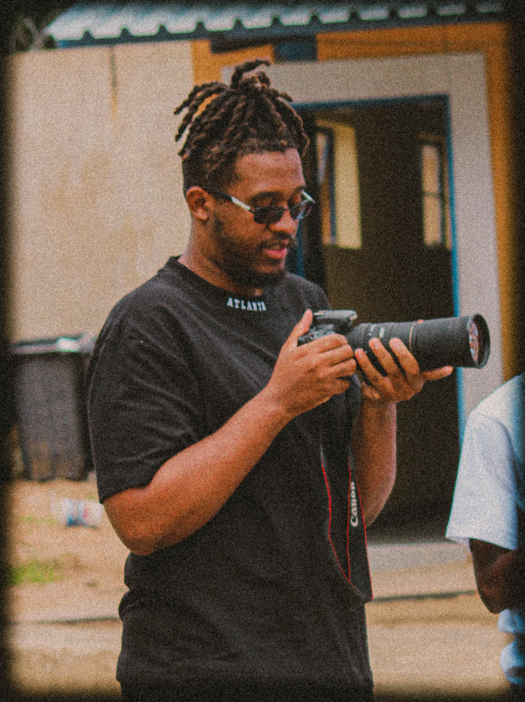

My journey began with a pencil, drawing and creating illustrations. This foundational love for visual language led me into the world of photography, where I found my true voice in bringing complex concepts to life.